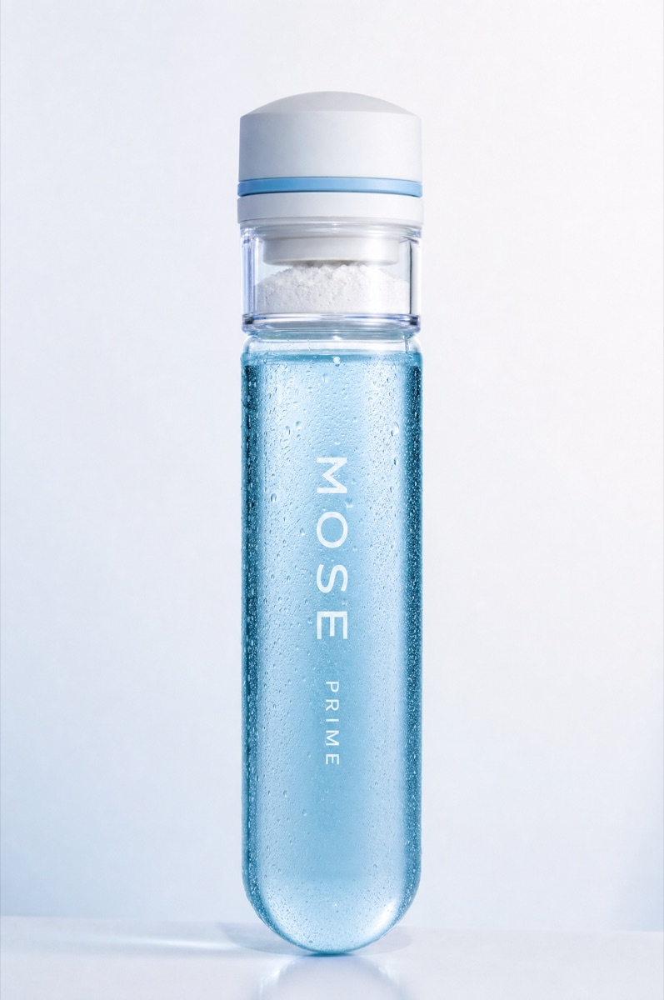

Design + function working blueprint · concept stage
The vessel & the stopper. Pop. Shake. Pull. — engineered.
William's brief: a premium-but-affordable single-serve functional drink that reads as a test tube with a Voss-water calm — where the stopper is the star. This document proposes what it looks like and how it works, with the sizing math that decides how big the tube has to be.
3 vessel options3 stopper mechanismsPRIME · DRIVE · SETTLEcompanion to the formulation matrix
Part 00 · The look
Visual direction — rendered.
Concept renders of Option A + stopper S1, built straight from William's brief. The warm-stone shot is now the landing-page hero; the ice study is the alternate direction if we go colder and more clinical.
Chosen hero · warm stone · PRESS dome

Alternate · ice study · colder read
The system · dawn → midday → dusk
Part 01 · The constraint
Why a normal test tube is too small — the water math.
William's instinct is right: there's a minimum amount of water. It isn't a styling choice — it's chemistry. Creatine monohydrate dissolves at roughly 13 g per litre at ~20 °C (less when chilled). The 3 g dose in the cap therefore needs about 230 ml of room-temperature liquid just to fully dissolve — and more like 300 ml straight from the fridge.
Vessel
Dimensions
Holds
3 g creatine dissolves?
Verdict
Classic lab test tube
Ø16 × 150 mm
~20 ml
No — ~8% of the water needed
Prop, not a product
Large lab test tube
Ø25 × 200 mm
~70 ml
No — under a third
Still a shot, not a drink
Current formulation working doc
60–100 ml vial
60–100 ml
No — creatine would sit as grit
Superseded by this blueprint
MOSE tube (proposed)
Ø50 × 240 mm
300 ml fill
Yes — with the shake step
Reads as test tube, works as a drink
Bonus — the bigger tube fixes half of decision D1
The formulation matrix flagged PRIME's ~400 mg sodium in a 60–100 ml vial as 4.5–10× the concentration of a normal sports drink — harsh-metallic territory. In a 300 ml fill the same dose lands at ~133 mg/100 ml: still electrolyte-forward, but inside maskable range. The vessel size and the flavour problem are the same decision.
Honest limit
Chilled water dissolves creatine slower and less completely — that's exactly why Shake is a load-bearing step of the ritual, why the powder should be micronised, and why the label says drink promptly. The suspension is drinkable before it is fully dissolved; bioavailability is unaffected.
Part 02 · The vessel
Three ways to build a drinkable test tube.
All three keep the Voss DNA — a calm, unornamented clear cylinder where the structure IS the brand — and all three stand upright on a flat base. They differ in how hard they lean into the lab silhouette versus shelf practicality.
Option ARecommended
The MOSE Tube
The oversized test tube. Unmistakably lab-born, but with real drink volume. Flat "puck" base so it stands anywhere a water bottle stands; hand feel like a slim smoothie bottle.
Ø 50 mm × H 240 mm
Fill 300 ml · headspace ~18% (the shake needs it)
Fits a car cup holder: yes · fridge door: yes
Option B
The Slim Flute
Maximum drama. The tallest, thinnest silhouette that still carries the dose — pure lab glassware on a shelf of stubby bottles. The trade: it's taller than most fridge-door shelves and tips easier.
Ø 42 mm × H 300 mm
Fill 280 ml · headspace ~17%
Fits a car cup holder: loose · fridge door: most don't fit
Option C
The Voss Hybrid
Voss proportions with a test-tube shoulder. The most stable, most familiar-in-hand option and the friendliest for filling lines — but the least "test tube" of the three. A safe fallback, not the statement.
Ø 58 mm × H 200 mm
Fill 330 ml · headspace ~15%
Fits a car cup holder: yes · fridge door: yes
A · MOSE Tube
B · Slim Flute
C · Voss Hybrid
Reads as test tube
Strong
Strongest
Soft
Stability / knock-over risk
Good
Tippy
Best
Fridge + cup holder fit
Yes
Marginal
Yes
Standard co-packer tooling
Near-standard
Custom
Standard
Shelf presence per $
High
High
Medium
The rack — the subscription made physical
Test tubes come in racks. So does MOSE: a 7-slot lab-style rack as the weekly unit (or 21 for the full AM/midday/PM system). It solves multi-pack shipping, looks like furniture on a kitchen bench, and turns re-ordering into refilling. Material v1: birch ply or recycled PP, [TBD] with the co-packer.
Material honesty — premium feel, affordable unit cost
V1 ships in heavy-wall clear PET (glass-look wall thickness, recyclable, light to ship, safe in gyms) with the option of a glass limited run later. Voss made the same call in reverse — their plastic line outsells the glass icon. Unit economics: [TBD] pending co-packer quotes.
Part 03 · The stopper — the hero
The active cap: a dose chamber you can see.
Everything that makes MOSE different lives in the stopper: 3 g of dry actives sealed in a clear chamber above the liquid — 100% potent at the moment you drink, never slowly degrading in solution. Three mechanism concepts, one recommended.
S1Recommended
Press-Pop Dome
A soft-touch dome you press with your palm. The press drives a cutter skirt through a foil membrane and the dose drops — with an audible, feelable pop. Pull the whole stopper like a cork (second pop) to drink. This is proven closure tech — the same family as the Vessl closure and Karma Water's push cap — so it's manufacturable at single-serve price points, not a science project.
S2
Quarter-Twist
Twist the cap 90° to shear the seal and release the dose. Cheapest tooling, most co-packer-familiar — but the brand verb is Pop, and a twist doesn't pop. Keep as the value fallback if S1 unit cost disappoints.
S3
Piston Cork
A cork-look outer over an internal piston — the most theatrical and the most premium in hand. Highest part count and cost; a v2 / limited-edition candidate once the brand has earned it.
Why the chamber must be clear
Seeing the dry powder above the liquid is the entire trust story — "it's 100% potent because it hasn't touched the water yet" — told in one glance, no copy needed. The dome and ring carry the SKU colour (blue / yellow / violet); the chamber stays glass-clear.
Part 04 · The ritual
Pop. Shake. Pull. — what the hand feels.
Each step has a physical payoff. That's what makes it a ritual instead of an instruction.
Step 1 · thumb or palm
Pop
Press the dome. The cutter opens the membrane and 3 g of dry actives cascade visibly into the liquid.
FEEL: a clean click-through, like a pen · HEAR: pop #1
Step 2 · 3 seconds
Shake
The headspace is engineered for this — 18% air so the liquid can actually move. The colour blooms as it mixes.
FEEL: liquid weight shifting · SEE: the swirl — the show
Step 3 · like a cork
Pull
The whole stopper pulls free against the O-ring. Wide Ø50 mouth — drink it like a drink, not a shot glass.
FEEL: cork resistance then release · HEAR: pop #2
Part 05 · Function spec
The system, specified.
PRIME · AM
DRIVE · Midday
SETTLE · PM
Cap actives (dry, 3 g class)
Creatine + electrolytes
Creatine + aminos
Magnesium glycinate + glycine — no creatine, melatonin-free
Flavour direction
Coconut & Lime
Mango & Passionfruit
Blackcurrant & Berry (lavender aroma-grade only — see D4)
Liquid base
Lightly acidified still water
Lightly acidified still water
Berry base, still (masks the magnesium)
Cap colour code
Ice blue ring + dome
Mango yellow ring + dome
Violet ring + dome
Pack function
Spec
Dry-chamber seal
Foil membrane + desiccant-grade chamber; actives never contact liquid until Pop. This is the potency claim, physically enforced.
Tamper evidence
Break-away ring under the dome — the Pop is also the tamper check (can't have happened twice).
Seal integrity
Food-grade silicone O-ring on the stopper skirt; leak-proof inverted and in a gym bag.
Materials
Tube: heavy-wall clear PET (v1) / glass (later run). Cap body: PP. Membrane: foil laminate. All food-contact grades, all kerbside-recyclable once separated.
Fill process
Acidified still base, hot-fill or tunnel-pasteurised per the formulation matrix; dry actives filled and sealed into caps on a separate dry line, married at capping.
Label
Direct print or ultra-clear PS label, vertical type — the liquid IS the label. "Last thing you read before you pop" microcopy on the dome.
Part 06 · For William
Five decisions to lock.
D1
Vessel: A, B or C?
Recommendation is A (Ø50 × 240, 300 ml). B is the drama pick with real shelf-life friction; C is the safe fallback.
D2
Stopper: confirm S1 Press-Pop Dome
It's the only mechanism where both brand pops (open + pull) are real. S2 saves money but loses the verb.
D3
PET v1 or hold for glass?
PET gets premium-look at affordable unit cost and survives gym bags. Glass becomes the limited-run flex later.
D4
SETTLE flavour naming
Your latest note says "Blackcurrant, Berry & Lavender". The formulation matrix locked lavender to aroma-grade only (medicinal-line risk). Proposal: sell it as Blackcurrant & Berry, keep lavender as an aroma note, not a named ingredient.
D5
PRIME sodium (carried from formulation matrix)
The 300 ml vessel softens the concentration problem but doesn't close it — still choose: lower the target, switch to sodium citrate, or own the electrolyte-forward taste.